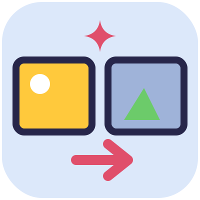
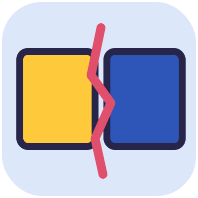
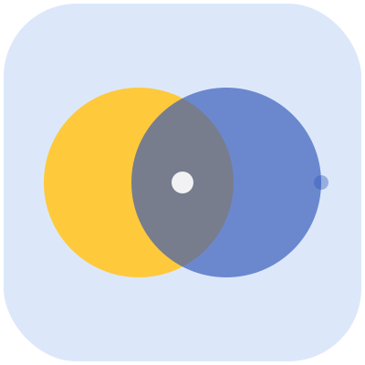

Livello 2 · Missione 14
Il cambio di scena
In Animatoon pulsante La storia → Come cambiano le scene? (Nessuna · Dissolvenza · Scorrimento)

«Il tuo film è fatto di scene, una dopo l'altra. Ma come si passa dall'una all'altra?
Apri La storia: sotto «Come cambiano le scene?» trovi tre modi.

Nessuna. Una scena finisce, l'altra comincia di colpo. È un taglio secco: perfetto per una sorpresa o per far ridere.
Dissolvenza. Una scena sfuma piano piano nell'altra. È il passaggio per il tempo che passa: «il giorno dopo», un sogno, un ricordo.- Scorrimento. La scena scivola di lato e quella nuova entra. È il passaggio dei viaggi e degli inseguimenti.
Ora il tuo compito: scegli un cambio di scena per ogni passaggio del tuo film, e pensa perché.
- Dall'inizio al problema: tutto è tranquillo... e poi Bam! Che taglio ci vuole?
- Dalla sfida al colpo di scena: l'eroe corre verso qualcosa. Che passaggio sceglieresti?
- Dal colpo di scena al finale: è passato del tempo? O no?
Se non sai quale scegliere, prova tutti e tre e guarda il film. Il tuo istinto ti dirà quale funziona.»
Parte riservata a chi ha il libro
Qui ci sono la scheda operativa da stampare, i tutorial e i sussurri per i grandi. Scrivi la parola magica stampata nel libro.